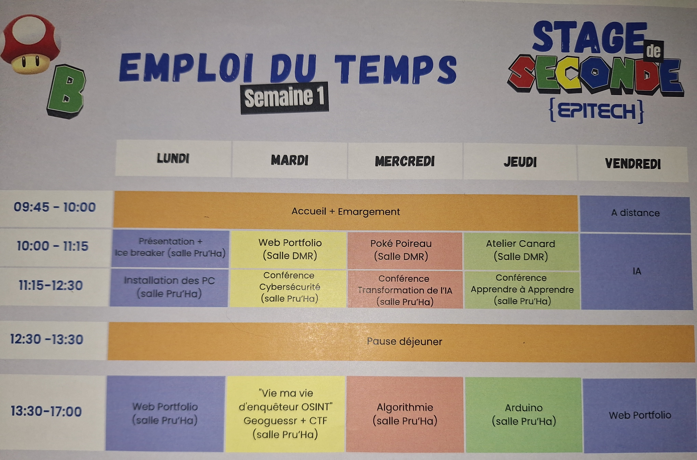
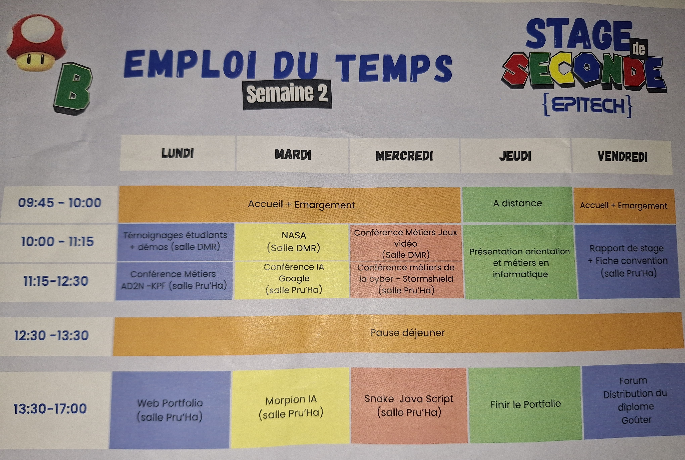

Emploie du temps de la première semaine :

-> Détails des journés de la 1ère semaineEmploie du temps de la 2ème semaine :

-> Détails des journés de la 2ème semaine
-> Détails des journés de la 1ère semaine
-> Détails des journés de la 2ème semaine